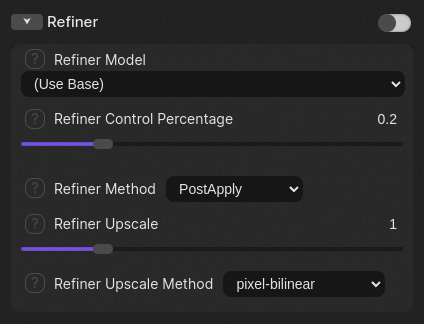
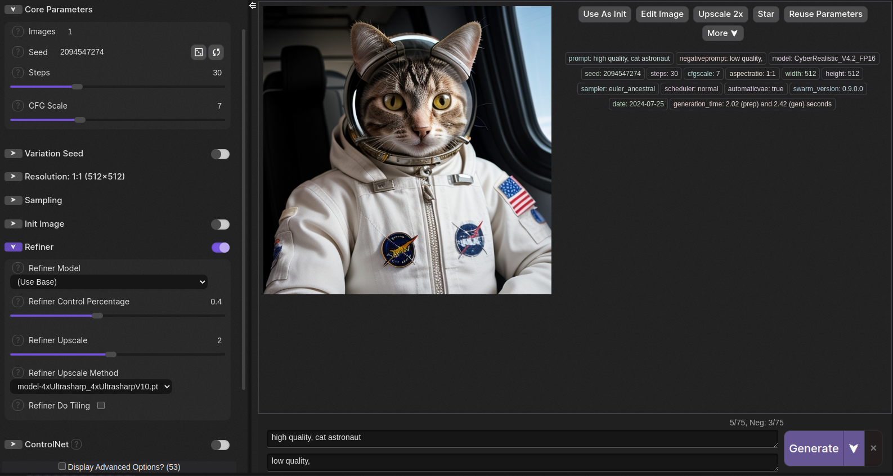
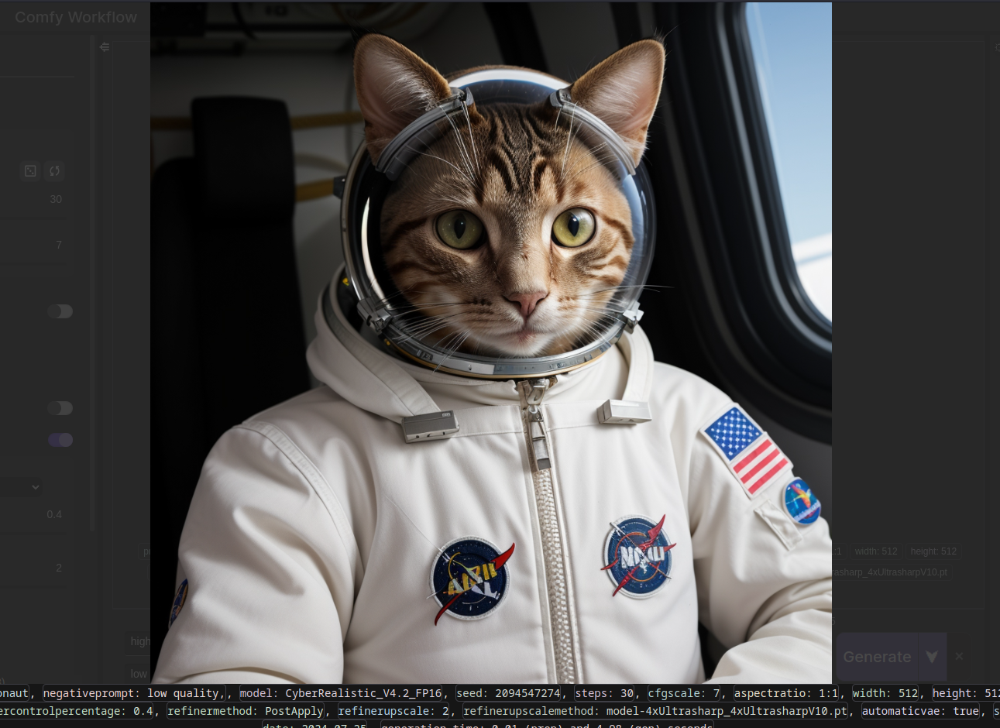

Table of Contents
In this guide, we'll talk about the refiner in SwarmUI, also known as image upscaling or "high-res
fix."
Refiners allow you to upscale your images to higher resolutions without losing detail.
If you haven't read the Getting Started with SwarmUI guide, we recommend you read that prior to reading this, as
it
covers the fundamentals.
Refiner Parameters
The refiner is simple to use. Expand the Refiner setting on the left-hand side.

Let's look at some parameters:
- Refiner Model: Which model to use. This is best left on the default setting "(Use Base)" unless you
have
a specific reason to change it.
- Refiner Control Percentage: How much control you're letting the refiner have over your original image. A
higher
value means more control, a lower value means less control. This value is important and you will need to
experiment
with it to achieve the best results.
- Refiner Method: How the refiner is applied to the image. Default setting is "PostApply," meaning
that
the refiner will be applied on the finished image. The other settings apply the refiner during the generation of
the
original image. The default setting works great for most cases.
- Refiner Upscale: Another crucial setting is how much you want to upscale the image. Best values are 1.5x and
2x,
but it can go all the way to 4x and beyond. Tiny Llama can upscale up to 2x, but you may run into resource
constraints after a certain point.
- Refiner Upscale Method: The upscale method has arguably the greatest effect on your upscaled image. SwarmUI
provides several methods by default, however they may not produce the best results. We've provided a popular
community refiner called '4x-UltraSharp' which will deliver far greater results.
Try It Out
Let's refine an image. Here's some parameters:
- Refiner Model: (Use Base)
- Refiner Control Percentage: 0.4
- Refiner Method: PostApply
- Refiner Upscale: 2
- Refiner Upscale Method: 4xUltrasharp_4xUltrasharpV10.pt
I already have a picture I want to try:

Make sure the refiner is enabled with that slider toggled and hit Generate when you're ready.
Here's the result:

Now that is one fine-looking gentleman!